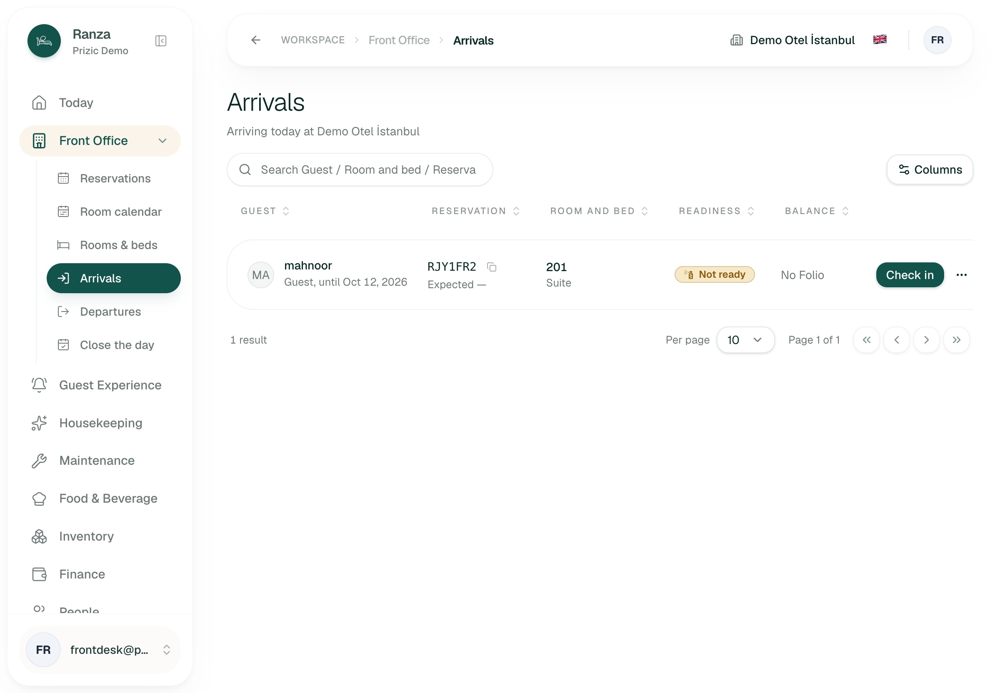
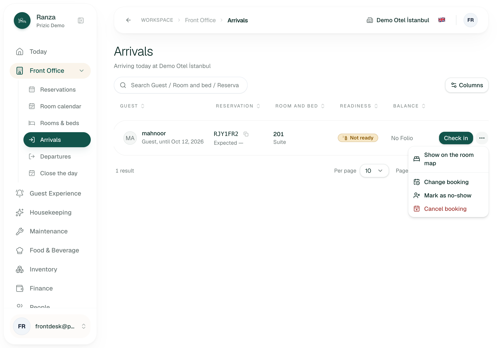
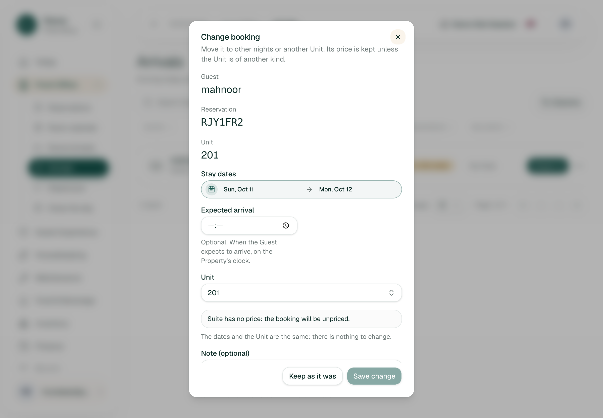
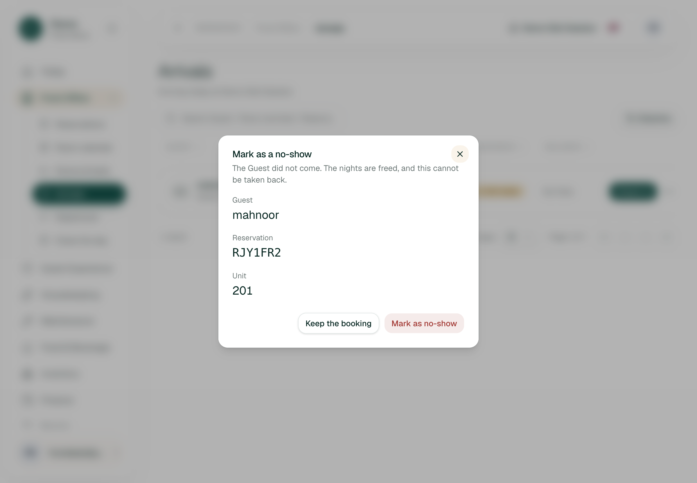
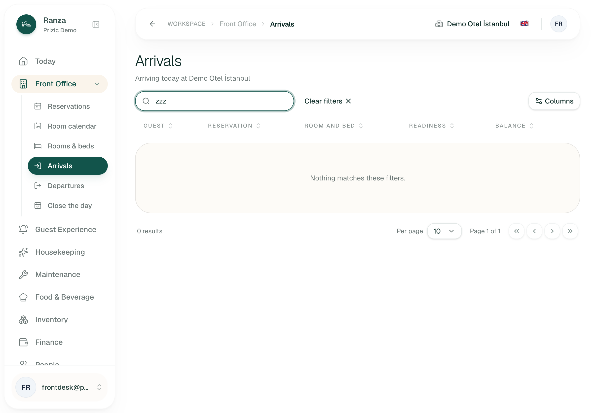
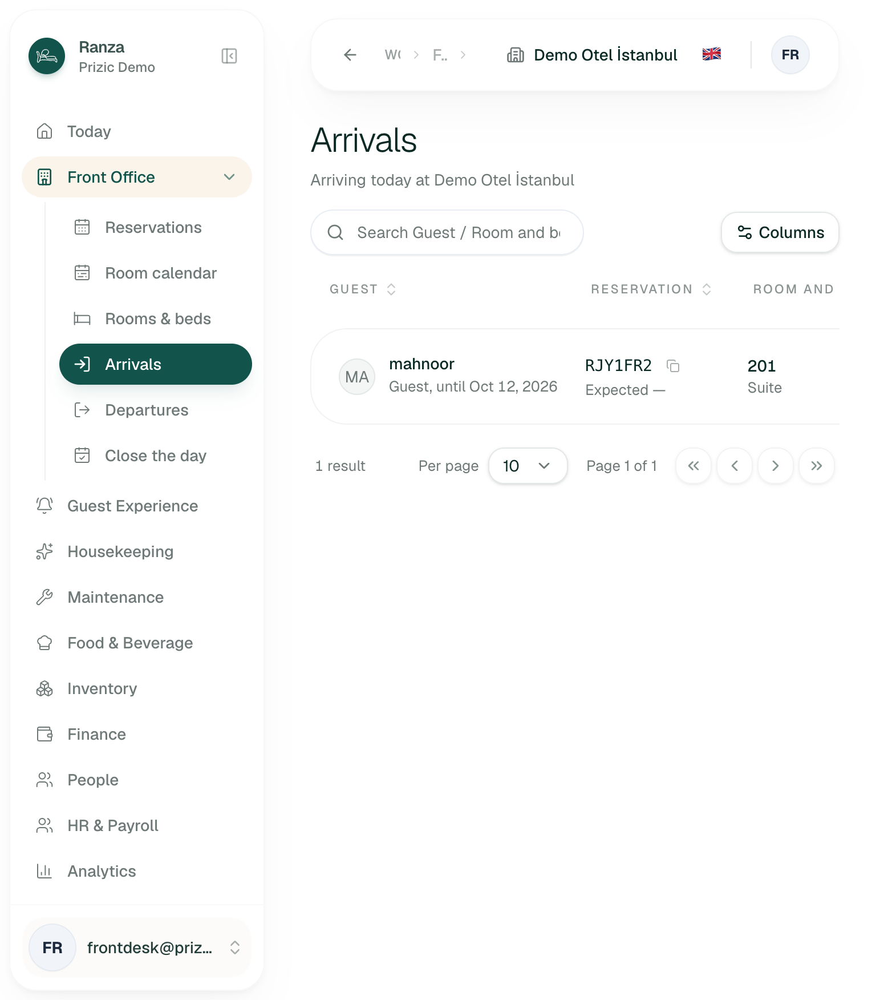
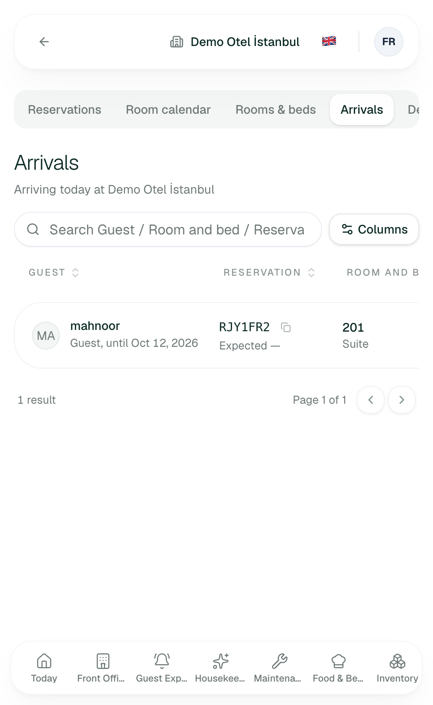
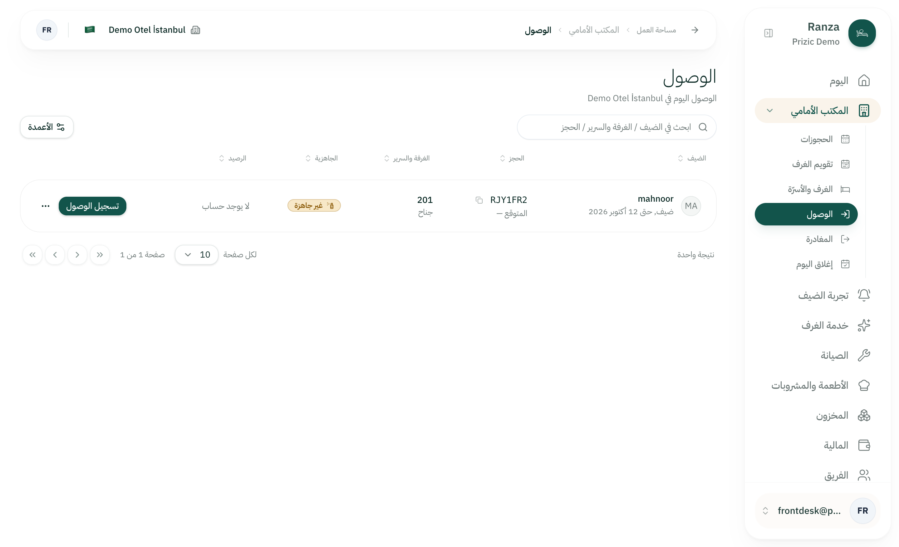
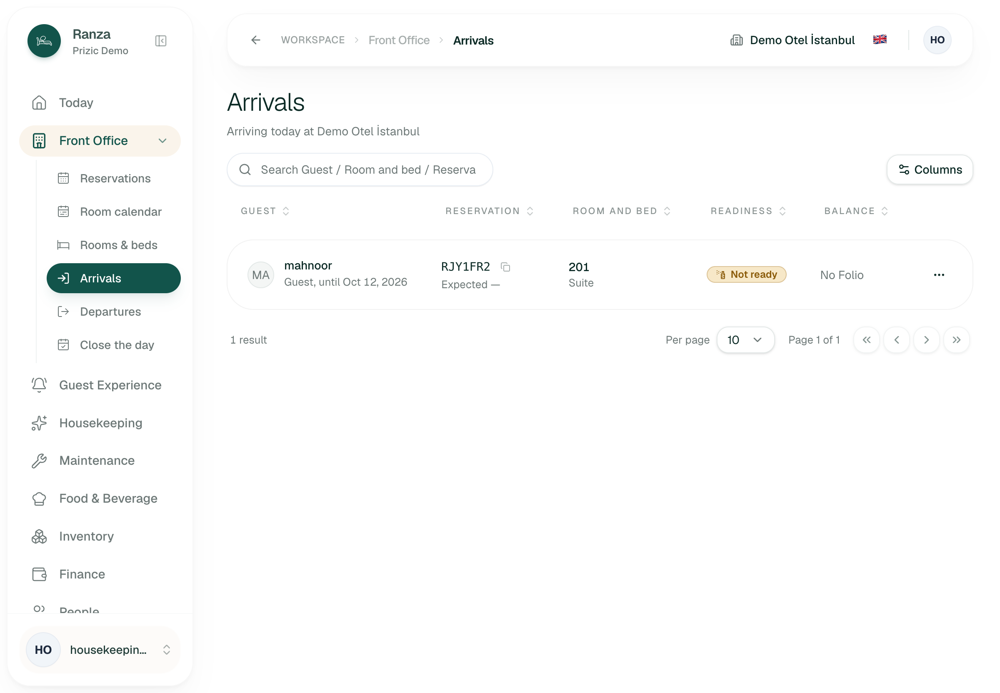
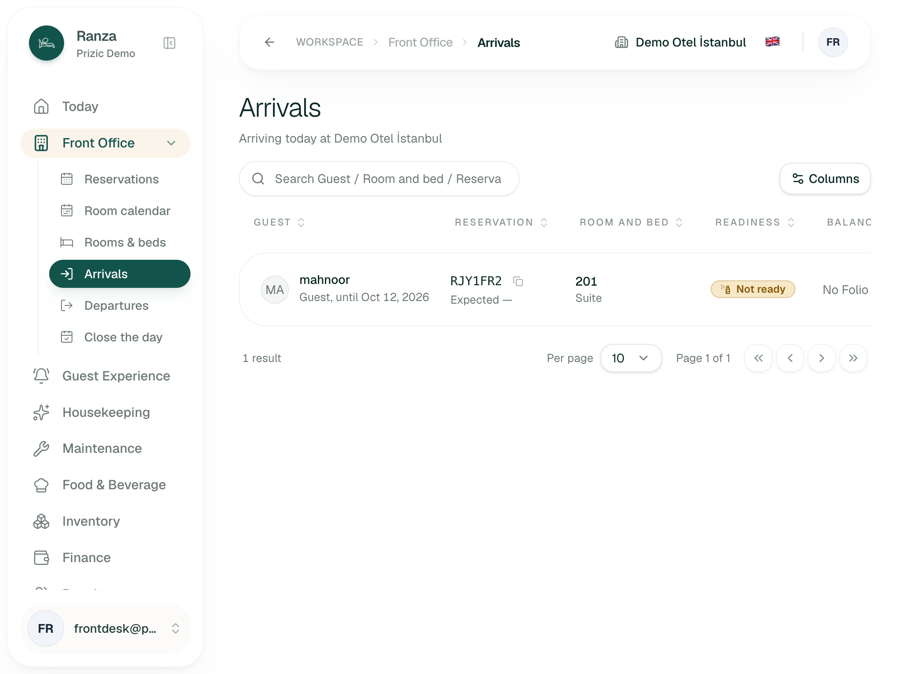

UX audit: Arrivals
1. Verdict
- Unaided, on a desktop monitor: yes, with one row. On the tablet a desk actually uses: no. At 1024 px and 768 px the Check in button sits outside the screen inside a sideways-scrolling table (verified, ARR-01).
- Biggest risk: the list is sorted by room name, not by who is arriving next, and the expected time cannot be sorted (inferred from the query and column definitions, ARR-02). With 30+ arrivals a day the desk cannot see "next" or "overdue" at a glance.
- The check-in itself is well built: one tap for a ready room, a plain question for a room that is not ready, safe against two desks pressing at once (inferred, edge-case rows CI-S1-11, CI-S1-19, CI-S3-14). I did not press it, by the audit rules.
- Around the edges the page is a dead end: an early guest, a walk-in or a guest not on today's list gets "Nothing matches these filters." and no next step (ARR-05, ARR-06).
- Total: 16 findings, 1 blocks work, 0 causes errors, 8 slow me down, 7 polish. Turkish and Arabic render correctly and mirror (verified); the back button is present.
2. Findings
| ID | Severity | Where | What happened | What I expected | Suggested fix | Effort | Evidence / reproduced | Basis |
|---|---|---|---|---|---|---|---|---|
| ARR-01 | blocks work |
/en/arrivals, Front Desk, 1 row. Widths 375, 768,
1024.
|
The sidebar stays open from 768 px up and takes about 40% of the width. The table scrolls sideways inside its own box (scroller 923 px wide in a 464 px box at 768). The Check in button measured at x=1050 to 1134 on a 1024 px and on a 768 px screen, i.e. off screen. Readiness and Balance are cut too. At 375 px the row shows Guest, Reservation and half of Room; there is no hint that more is to the right. At 1180 px it fits (Check in right edge 1166 px, measured in the Turkish page). | The one button I press 30 times a day visible at every width a desk tablet uses (iPad landscape is 1024). | Collapse the sidebar by default below about 1280 px, and/or pin the action column to the right edge, and/or show each row as a card below 1024 px (guest, room, readiness, button). | M | 06-tablet-768.png, 07-mobile-375.png, 10-tablet-1024.png. Reproduced Y (3 widths, 2 locales). | verified |
| ARR-02 | slows me down |
/en/arrivals, Front Desk, many rows (not seen).
|
No default sort is set in the table (useState([])),
so rows come in the query's order: room name, then Unit, then
guest (listArrivals in the reservations module).
The expected time is printed inside the Reservation column,
whose sort key is the reference code, so the time cannot be
sorted. Checked-in rows are mixed in with the ones still to
come. Late arrivals (shown by "N days late") are not grouped.
|
The next arrival first, overdue ones highlighted at the top, checked-in ones last or folded away. The Departures screen already puts "who has already left" under "who is still to go". | Default order: overdue, then by expected time (none last), then by room. Make Expected its own sortable column. Group or fold "Checked in". | S to M | 01-arrivals-desktop.png shows only one row, so the order itself was not seen. Reproduced N. | inferred (code); the unsortable time is also visible in the column headers |
| ARR-03 | polish | Front Desk, any row with no expected time. | The row says "Expected —" (a dash). "No expected time" exists only for screen readers. A dash after "Expected" reads as "not loaded". Turkish shows "Beklenen —". | "No time given" in muted text, or nothing. | Show the words, or hide the line when there is no time. | S | 01-arrivals-desktop.png. Reproduced Y. | verified |
| ARR-04 | slows me down | Front Desk, a "Not ready" room (the only data state present). |
The badge says only "Not ready". The cause (dirty, or waiting
for inspection) is known to the system but not shown; the
warning text that appears after pressing Check in says "it
hasn't been cleaned, or it's waiting for inspection", an
either/or. The row menu offers only "Show on the room map": no
link to Housekeeping, no way to see who is cleaning it or when
it will be done. To learn anything more I must press Check in,
get the question, then press "Check in anyway": two presses and
a server round trip. I did not press it (audit rule); the flow
is read from check-in-action.tsx and the module,
where the "not ready" answer rolls back the Stay.
|
The badge names the cause. The question names the room and offers a way to ask Housekeeping or open its status, beside "Check in anyway". | Put the cause in the badge ("Dirty", "Awaiting inspection"). In the question use the room name and the cause. Add "Open in Housekeeping" to the row menu. | M | 01-arrivals-desktop.png, 02-row-menu.png. Badge and menu reproduced Y; the question is stopped before submit, not persisted. | verified (badge, menu); inferred (question) |
| ARR-05 | slows me down | Front Desk. A guest who arrives a day early, or one booked for tomorrow. |
The list holds only today's bookings and late ones. Searching
for an early guest gives "Nothing matches these filters." with
no pointer to Reservations. The desk must leave, find the
booking in Reservations, use Change booking to start today, then
come back. Docs: CI-S1-21 is still
open (recommends a muted "arriving next business day"
group with a "Change to start today" action);
CI-DEF-01 is deferred and its text is out of date,
because Change booking now exists.
|
Search that falls back to "also look at upcoming bookings", or a muted group below today's list. | When search finds nothing, add a link "Search all reservations for this" carrying the text. Then build CI-S1-21. | S (link), M (group) | 05-search-no-match.png. The empty search reproduced Y; the early-guest path is inferred. | verified (dead-end message); inferred (the route) |
| ARR-06 | slows me down | Front Desk. A walk-in with no booking. |
Arrivals has no "New booking" action. A walk-in is booked in
Reservations and then checked in, as CI-S1-08 says;
from this page there is no hint of that route.
|
A "Walk-in" button on the page header that opens the booking form for today and returns to this list. |
Add the entry point. The booking form already exists in
Reservations (new-reservation-dialog.tsx).
|
M | 01-arrivals-desktop.png (no such control). Reproduced Y. | verified (absence); inferred (the rest) |
| ARR-07 | slows me down | Front Desk, keyboard only, a queue. |
From the "Skip to content" link, Check in on the first row is 9
Tab presses away (search, Columns, 5 sort headers, Copy
reference, Check in); every further row adds 3 stops (copy,
check in, menu). After a successful check-in the Check in button
is replaced by Undo, and focus is only restored for the undo
path (check-in-focus.ts), so focus falls back to
the page. The user then re-tabs from the top for every guest.
The check-in button's accessible name is just "Check in" on
every row (only the menu button carries the guest's name).
|
After a check-in focus moves to the next row's Check in; each button names its guest ("Check in mahnoor") and the Copy button is not in the way. | Claim focus after "done" for the next actionable row; add an accessible name with the guest; take Copy reference out of the tab order (or put it after the action). | S to M | Tab count verified from the page's focusable elements; focus loss inferred from code. Reproduced Y (count), N (focus loss). | verified (count, names); inferred (focus loss) |
| ARR-08 | polish | Every page, Front Desk. | The browser tab is titled "Ranza" on Arrivals and on every other screen. A desk that keeps Arrivals and Departures open in two windows (the page's own code comment describes this) cannot tell the tabs apart. | "Arrivals · Demo Otel İstanbul" in the tab. | Set the page metadata title per route. | S | Seen in the browser's page list for my tab. Reproduced Y. | verified |
| ARR-09 | slows me down | Front Desk, a shift-long open tab. |
The list polls every 30 s and pauses when the tab is hidden, but
nothing on screen says how fresh it is. A refused poll leaves
the last good rows and their Check in buttons on screen (the
docs record this as CI-DIFF-01, "current behaviour
differs"). A signed-out desk keeps showing guests' names and a
button that will be refused.
|
"Updated 14:02" next to the title and a visible "can't refresh" warning with a Refresh button. | Show last-updated time; on a 401 or failure show a banner and disable Check in. | S to M | No such indicator in any screenshot (01). Reproduced N for the failure case. | verified (no indicator); inferred (poll behaviour) |
| ARR-10 | slows me down | Front Desk, a check-in that fails. |
Several different causes (stale row, permission, closed day,
lost connection, an unexpected error) all end as "That
Reservation cannot be checked in." No next step. The
unexpected-error case is logged by the server to the console
only (console.error), not to Observatory.
Double-press is safe: the button is disabled while the request
runs and the database lock gives one Stay and one refusal
(CI-S1-11).
|
Tell the desk whether to retry, reload or ask a manager. | Split "refused" into "reload the list" (stale) and "ask a manager" (permission), and send unexpected failures to the shared error reporter. | M | Not triggered (would require a submit). Reproduced N. | inferred |
| ARR-11 | polish | Row menu dialogs, Front Desk. | The column says "Room and bed" and the Turkish and Arabic use room words, but the dialogs say "Unit" ("Unit 201", "another Unit", "Suite has no price"). One page, two words for the same thing. The Change booking dialog also says "Keep as it was" while the no-show dialog says "Keep the booking". | One term (Room) and one wording for the cancel button. | Replace "Unit" in dialogs shown to desk staff; align the cancel labels. | S | 03-change-booking.png, 04-no-show-dialog.png. Reproduced Y. | verified |
| ARR-12 | polish | Front Desk, any not-yet-checked-in row. | The Balance column shows "No Folio" for every arrival, because the Folio is opened at check-in. It uses a column of width for a constant, and "Folio" is back-office language. The second line of the Guest cell reads "Guest, until Oct 12, 2026": the word "Guest" is the stay type and adds nothing; the number of nights and the room type's price are not shown. | Nights ("1 night"), and the balance column hidden until it has a value. | Show "1 night, until Oct 12". Hide the Balance column while no row has a Folio, or show "Due at check-in" once deposits exist. | S | 01-arrivals-desktop.png. Reproduced Y. | verified |
| ARR-13 | polish | Front Desk, 1024 and 1440 px. | The search placeholder is cut off: "Search Guest / Room and bed / Reserva". | A placeholder that fits. | "Search guest, room or reference". | S | 01-arrivals-desktop.png, 10-tablet-1024.png. Reproduced Y. | verified |
| ARR-14 | polish | Housekeeping and Finance. |
Both see the full list read-only. Housekeeping's row menu has
one item ("Show on the room map"); there is no link to mark the
room clean, which is the one thing the role comes for. Finance
sees no actions and a "No Folio" balance, with no note that the
role cannot check in (the action cell is simply empty). This
matches FD-S5-03 and FD-S7-05: the
controls are hidden by design.
|
For Housekeeping: a link to the room in Housekeeping. For read-only roles: a muted "View only". | Add the Housekeeping link; show a "View only" hint in the action cell. | S | 09-housekeeping-role.png. Reproduced Y. | verified |
| ARR-15 | slows me down | Front Desk, a busy day (more than 10 arrivals). | The table shows 10 rows per page. Sort, search and page size are held in component state, so they reset on a reload and on every visit. On a 40-arrival day that is four pages, in room order. | All of today's arrivals on one scrollable page, or a remembered page size. | Default the page size to 50 for this screen, or remember it. | S | Page-size selector shows 10 (01). Behaviour on 40 rows not seen. | verified (default 10); inferred (reset) |
| ARR-16 | polish | Front Desk. | "Mark as no-show" is two clicks from the list and cannot be taken back (the dialog says so, which is good). It is offered from the first minute of the arrival day, with no hint of the expected time having passed, and sits directly under "Change booking" in the same menu. | A warning when the expected time has not passed, or no-show offered after the expected time or a cut-off. |
Show the expected-time status in the dialog. Rule
FD-S4-04 allows it on the day, so this is a policy
choice, not a bug.
|
S | 02-row-menu.png, 04-no-show-dialog.png. Stopped before submit, not persisted. | verified (dialog); inferred (timing) |
3. Jobs
Times are rough hand timings from the browser session, not a stopwatch. Clicks count taps from the Arrivals page.
| # | Job | Pass test (written first) | Result | Seconds | Clicks |
|---|---|---|---|---|---|
| J1 | First look: a new agent reads the list and knows who is next and which rooms are ready | Within 10 s, without help, names the next guest, their room and its readiness. | Pass with one row. With many rows, fail: the order is by room (inferred, ARR-02). | ~5 | 0 |
| J2 | Check in a guest in a ready room (the most frequent task) | One tap on the row, row reads "Checked in", no extra confirmation. | Stopped before submit, not persisted. No ready room existed. Inferred from code: one tap, no dialog; the button is disabled while sending. | n/a | 1 (inferred) |
| J3 | Check in a guest whose room is not ready | The reason is named and a next action is offered; at most two taps. | Partial. Reason not named on the badge, no Housekeeping link (ARR-04). Question read from code; stopped before submit. | n/a | 2 (inferred) |
| J4 | Find a guest in the queue by partial name, reference or room | Typing three letters leaves the right row; case does not matter. | Pass. "MAH" (upper case), "rjy1" and "201" each gave 1 result; "zzz" gave "Nothing matches these filters." with a Clear filters button. | ~8 each | 1 (focus) + typing |
| J5 | A guest arrives a day early, or is not on the list | I can start their check-in in at most three actions without leaving the page. | Fail (ARR-05): dead-end message; route goes through Reservations and Change booking (inferred). | n/a | 6 or more (inferred) |
| J6 | A walk-in | A booking can be started from this page and returns here. | Fail from this page (ARR-06): no entry point. | n/a | n/a |
| J7 | Use the page on the desk tablet (1024 px and 768 px) | Guest, room, readiness and Check in all visible without sideways scrolling. | Fail at 768 and 1024 (ARR-01); passes at 1180 (Turkish page). | ~10 | 0 |
| J8 | Recover from a failed or doubled check-in under pressure | A second press does not make a second Stay; the message says what to do. | Partial, inferred. Double press is safe (disabled while pending; row lock, CI-S1-11). The message is generic (ARR-10). Not triggered. | n/a | n/a |
| J9 | Keyboard only, from page load to the first Check in, then the next guest | At most 5 Tab presses, and focus lands on the next row after a check-in. | Fail (ARR-07): 9 Tab presses after the skip link; focus loss after check-in inferred. | ~10 | 9 Tab presses |
| J10 | Other roles: Housekeeping and Finance open the page | They see the list but cannot check in, and nothing misleading is shown. | Pass with notes (ARR-14). No Check in button; Housekeeping's menu has only the room map. | ~15 (incl. sign-in) | 2 each |
4. Top changes, by time saved times frequency
- I can press Check in on the desk tablet without scrolling sideways. (ARR-01)
- I see who arrives next, and who is overdue, at the top of the list. Sort by expected time with overdue first, fold the checked-in rows. (ARR-02, ARR-03)
- After I check one guest in, my keyboard is already on the next guest's button, and each button says whose it is. (ARR-07)
- I know why a room is not ready and whom to ask, and I can confirm in one step. (ARR-04)
- A guest who is early, or has no booking, can be handled from this screen. Link from the empty search to Reservations, then the upcoming group and a Walk-in button. (ARR-05, ARR-06)
- I can tell whether the list is current, and I am stopped when it is not. (ARR-09)
- I see a whole shift's arrivals without paging. (ARR-15)
- When a check-in is refused I am told what to do next. (ARR-10)
- I can tell my browser tabs apart, and the screen uses one word for a room. (ARR-08, ARR-11)
5. Inconsistencies with sibling screens
-
Departures separates "who has already left" from "who
is still to go"
(
docs/handover/operator-workspace-screens.md, Today row); Arrivals mixes checked-in and pending rows in one room-ordered list (inferred). - Today offers check-in from a row of its own; the two screens use the same command, but only Arrivals carries the readiness question's layout fix (CI-S3-14). Whether Today asks the same not-ready question: unknown, I did not open it.
- Terminology: "Room and bed" in the column, "Unit" in the dialogs and "Rooms & beds" in the navigation (ARR-11).
- Back button: present at the leading edge of the bar and goes to Today (verified); it satisfies ADR 0035.
- Small screens: at 375 px the navigation becomes a bottom bar and a tab strip, but the table does not become cards; it just clips (ARR-01).
6. Not built / needs backend work
- Balance due or deposit before arrival. The Folio is opened by check-in (CI-S1-01) and deposits are deferred on purpose (roadmap, RG-DEF-04). The persona's "balance due" cannot be shown until check-in.
-
An unassigned-room arrival. This state does not
exist: a Reservation always has a Unit (
accommodation_unit_idis required on Reservation inprisma/schema.prisma, and the arrivals query joins it as an inner join). There is nothing to design for it today. - Listing tomorrow's bookings before the cutoff (CI-S1-21, open) and a one-press walk-in as a Stay of its own (CI-NB-01, open).
- Identity documents and legal registration at arrival (CI-DEF-05, deferred). Anything acting on the arrival event, such as a welcome message (CI-DEF-06, deferred).
- Automatic no-show: no source says it exists; no-show is a manual command (FD-S4-04).
- Moving the expected arrival time from the list row exists only through Change booking (FD-S6-*, proposed rows, not yet approved by the owner).
7. What already works well and must not regress
- The row carries what the desk needs in one line: guest, reference with a copy button, room and type, readiness badge, button (verified, 01).
-
The check-in is one tap with undo on the same row, with a reason
(inferred:
check-in-action.tsx, ADR 0022). The not-ready question sits where the button was and its two buttons are stacked to fit (CI-S3-14). -
A blocked reason replaces the button when check-in would be refused
(occupied, blocked, out of service, not confirmed), so nobody presses
a button that is certain to fail (inferred,
columns.tsx, FD-S5-01). - Search is live, case-insensitive, covers guest, reference and room, and offers Clear filters (verified).
- Dialogs say what will happen: the no-show dialog states "The nights are freed, and this cannot be taken back", and the Change booking dialog says "there is nothing to change" and keeps Save off until something differs (verified, 03, 04).
- Roles are respected: Housekeeping and Finance get no Check in, and Housekeeping's menu is reduced to the room map (verified, 09).
- Turkish and Arabic are complete on this page; Arabic mirrors the layout and the sort and menu controls (verified, 08).
- Skip-to-content link and a back button are present (verified).
- The list is prefetched on the server and polled every 30 s, so the desk does not see a spinner (inferred, ADR 0019).
Evidence









